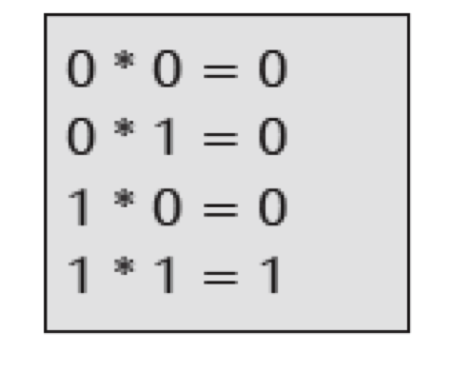
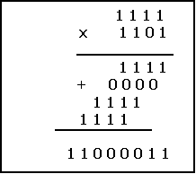
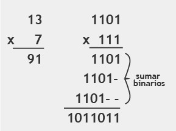

Las posibles combinaciones son:

Para entender el proceso de multiplicación veamos el siguiente video:
Vamos a revisar los siguientes ejemplos. Multiplicar los siguientes números:
En el siguiente ejemplo se observa claramente como primero se realiza la multiplicación de cada multiplicador y luego se realiza la suma binaria

En este último ejemplo en la parte izquierda esta la multiplicación en decimal y en la parte derecha en binario, como se ve el proceso es similar en ambos sistemas de numeración:

Haz las siguientes multiplicaciones binarias, si quieres puedes verificar tus resultados haciendo las multiplicaciones en el sistema decimal:
a. 101010101 * 101
b. 101001101 * 11
Resultados
a. 11010101001
b. 1111100111